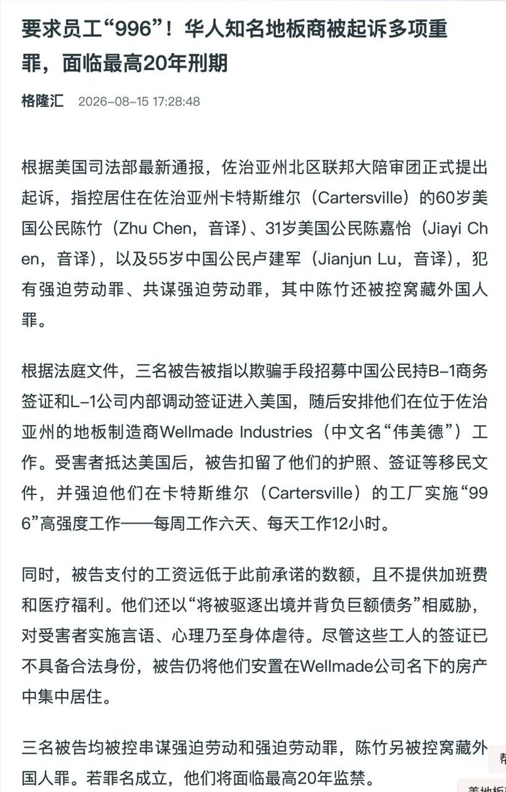

maybe🍥
@careforme123
@whyyoutouzhele 非洲已经被感染了，希望其他国家联合起来抵制强迫劳动加班文化！

李老师不是你老师
@whyyoutouzhele
把“996”带到美国，员工一天干12小时，华人老板最高面临20年监禁
近日，美国司法部通报，佐治亚州地板制造商伟美德（Wellmade）老板陈竹、其侄子及另一名中国公民，被控“强迫劳动、共谋强迫劳动”等罪名。 https://t.co/claU6Z5dYa